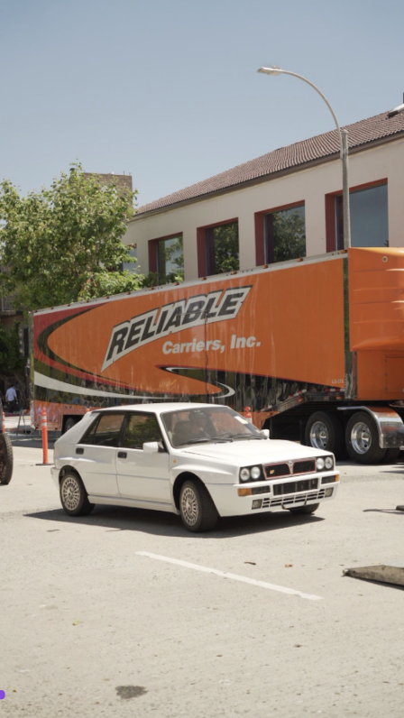
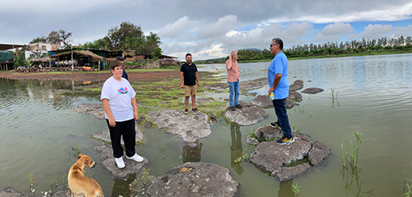

Learning Journal
Visual Thinking Analysis
2/10/2026

© 2026 Brandon Wong. All Rights Reserved
Brandon Wong’s collection of images all have a car theme. All the compositions are fairly similar, with the car on a pavement, either brick, asphalt, or concrete. All the images have a tree, a sky, and a building in the background. The cars are mostly a dark shade, except the example image, which stands out because it’s an older model car and is white in color. I find Wong’s example image particularly interesting because it includes a bright orange truck in the background with the bold words “Reliable.” The truck in the background is a great addition to the image of the older model car because it shows that this particular model is reliable and lasts over the years. Moreover, there is a mysterious person in the car. I wonder where he is going and how long he has been driving that car. It looks like the car is in the center of a construction site because of the cones and debris found in the foreground and background. “Life is a construction project” is what first came to mind as a topic name for this particular image.

© 2026 Eric Toscano. All Rights Reserved
This is an image of my dad, uncles, family friends, and a random dog that followed us on our adventure of having fun standing on the rocks in a lake. This lake is located in San Pedro Valencia during a particularly low-water season. The water is usually up to the base layer of the restaurants in the background. I enjoy this photo because of all the particular expressions of the people in the photo. From the random dog looking into the water to my uncle giving a smile to the camera. We are all on individual, isolated rocks, even the dog. I gave my project the title “Fun at Risk” because of various choices we make in life that might be a little risky, but you take them because you know it will be fun. We took the risk of falling into the water with our phones, but we wanted to experience what it was like to stand on a rock surrounded by a body of water.
Visual Thinking Strategies Research
2/7/2026
After reading 10 Intriguing Photographs to Teach Close Reading and Visual Thinking Skills an article by Michael Conchar written in 2015, I’ve gained a new revelation. The importance of stopping and shopping. What do I mean? What I mean is that there is gold all around us in every single environment we are in. Even being in our rooms. Where did those materials from that bookshelf come from? How was my bed manufactured, and why does it have a certain stitching pattern? What I’m trying to get at is that, like when mining for gold, you have to mine with a pick, when searching for answers, you have to start by asking questions.
I interacted with a website called MaxMara, a fun interactive guessing game to help you understand the camel fabric-making industry. Each part of the experience has careful attention to detail. From the music and sound effects to the dice animation as you scroll through the board game. It was a pleasant experience, and I was able to learn something new. From a technical side, I was asking questions such as “how do they animate those dice across the page when you scroll?” Next time you are in any space, stop and mine for gold.
Overlays Design Pattern Research
1/28/2026
Best Practices for Modals/Overalys/Dialog Windows an article by Naema Naskanderi written in 2017 concisely describes how to use and design popup-windows. With modal windows a user must close the popup in order to go back to the main section of information. Naskanderi says that these popup windows are extremely annoying for users to the point of clicking out of the popup without reading any of the information. She gives us a few methods on how to design these windows keeping in mind the triggers of many users when encountering them.
You should use a modal window when you are grabbing the user’s attention. Often times in modal windows you have an relativity small window overlay with a darkened lightbox in the background to focus the user’s eyes to the modal window. Because of this you can grab the user’s attention very easily with a modal window. She also recommends that you should have a keyboard accessible control to close the window such as with the escape key. This feature will ensure that user’s can be less frustrated when trying to leave the modal window. Whether your using the modal window for a newsletter popup or a login popup window it is recommended to have these windows to be opened by the user first so that they aren’t surprised when they do appear. Keep in mind we just don’t like stuff being in our face.
Research Form Design
1/19/2026
Salim Ansari, in his article "“Best Practices for Form Design," talks about “20 tips to boost form usability.” From layout to buttons, Ansari explains how to effectively convert an audience to filling out what everybody loves, a nice, beautiful form. The claim is that if you can use these 20 tips in your form design, you will see a boost in conversions.
Some of the pieces of advice that stood out to me were the use of inline field labels. These labels contain text inside the input field describing what the user should input. The negative side to using these types of labels is that once a user starts writing, the description is removed, and if the user wants to see what the label was called, they would need to remove their input. Lastly, I thought the concept of building out labels for buttons with “I want to…” and then finishing the sentence and using that to name the button is brilliant. I’ve found it hard in the past to make names for buttons, so implementing this strategy will surely boost my efficiency.
Give Butter, an online fundraising platform, uses a few strategies from the article. The sign-up form includes both inline field labels and labels outside the field, which I found interesting because the article recommends not using inline field labels, but they compensate for that by also adding the labels to the top of the input field.